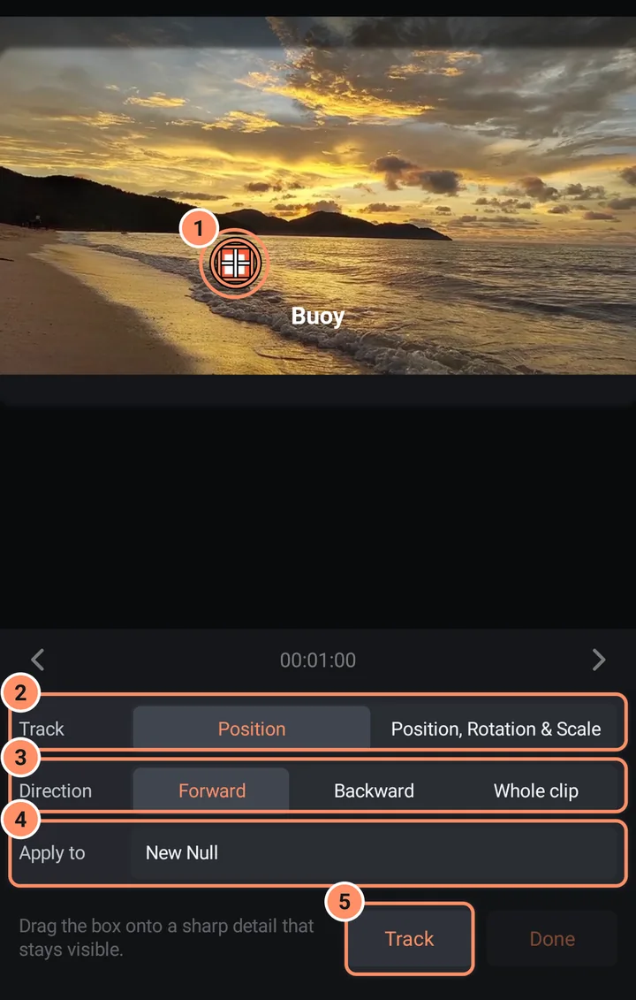

動態追蹤
讓標題、貼紙或形狀跟隨影片中移動的物體。
動態追蹤會追蹤影片中的某個細節，例如招牌的一角或一張臉，並寫入位置關鍵影格，讓你可以套用到其他圖層。追蹤在你的手機上執行。
如何追蹤
- 選取一個影片圖層。將播放頭移到細節清楚可見的影格。
- 開啟圖層選單（三個點），然後點選動態追蹤。如果播放頭在片段之外，它會跳到第一個影格。
- 影片上會出現一個方框。將它拖到清晰且會持續可見的細節上，例如角落或紋理。若要追蹤旋轉與縮放，請使用兩個方框，放在同一個物體上相距較遠的兩個細節。
- 選擇要追蹤的項目以及套用的位置（見下方）。
- 點選追蹤。進度列會顯示「追蹤中... 40%」。點選取消即可停止；已追蹤的影格會保留其關鍵影格。
- 完成後，應用程式會顯示「已追蹤 N 個影格。關鍵影格位於...」。點選完成。

選項
| 選項 | 選擇 |
|---|---|
| 追蹤 | 位置（一個方框），或 位置、旋轉與縮放（兩個方框） |
| 方向 | 向前（預設值）從播放頭追蹤到片段結尾，向後從播放頭追蹤到開頭，整個片段則兩個方向都追蹤 |
| 套用至 | 新增空物件（一個新的隱形圖層，名為 Track 1，長度與片段相同）或現有圖層 |
目標會取得位置關鍵影格；在兩個方框模式下，也會取得旋轉與縮放關鍵影格。
使用結果
最有彈性的方式是新增空物件：接著，使用上方列的父圖層按鈕（見編輯器畫面），讓你的標題、貼紙或形狀成為空物件的子圖層。之後它就會跟隨影片移動。你也可以在套用至中選擇標題圖層本身。
追蹤停止時
如果細節遺失，執行會停止並顯示訊息：「追蹤已在第 N 個影格遺失。請將點移回同一個特徵上，然後點選「繼續」。」將方框移回同一個細節上，點選繼續，追蹤就會從該處接著進行。如果該位置的細節不足，請把方框移到更清晰的角落或紋理上。
小技巧
- 選擇對比強烈、會持續留在畫面中、且形狀不會改變的物體。
- 放置方框前，先將播放頭移到最清楚的影格，然後選擇整個片段，即可從該處向兩個方向追蹤。
- 之後你可以像編輯其他關鍵影格一樣編輯它們：見關鍵影格與緩動。